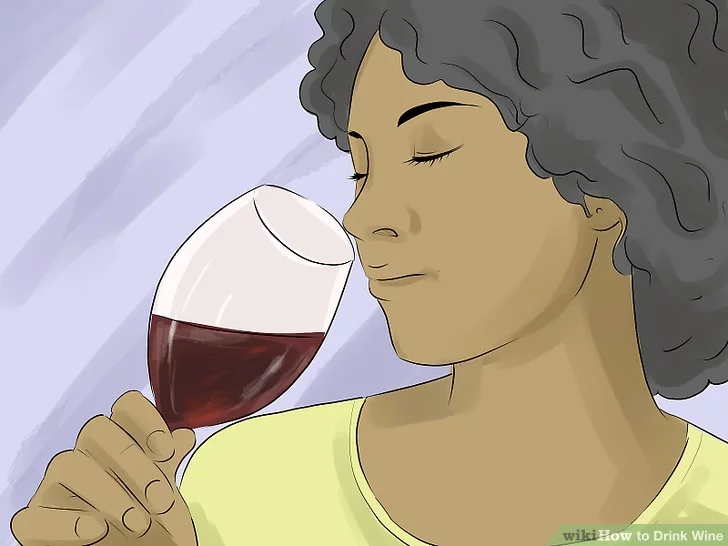

You don’t need to know all of the technical terms and different types of wine to become a wine drinker. All you need is some curiosity and a willingness to try new things! We’ve put together some helpful tips for beginners, like how to choose wine, taste wine, and serve wine, so you can feel more confident as you begin to navigate the world of wine.
1. Get a recommendation. If you're a new wine drinker, go to a store that specializes in wine to ask for help in selecting the wine that is right for you. If there isn't a specialty wine store near you, don't panic. Most liquor and grocery stores have a large variety of wine, so you should have no problem finding the right wine for you.
2. Choose a wine. Knowing what qualities you're looking for in a wine is very important, as there are numerous types of wine. Do you want a full-bodied or light-bodied wine? Body equates to how heavy the wine actually feels in your mouth. Or do you prefer a dry or sweet wine? In wine-speak, dry is the opposite of sweet. Do you want a crisp or soft wine? A wine with refreshing acidity is crisp, whereas a wine that feels smoother is considered soft.
3. Pour 1-2 ounces of wine into your glass to taste it before deciding on a full glass. It's common to try a few sips of wine before committing to a glass. Proper wine tasting is a great way to determine whether or not you like the overall flavor of the wine.
4. Experience the aroma. Swirl the wine in your glass to expose it to a larger surface area. This increases wine's contact with air and intensifies its aroma. Swirl your wine by holding the glass by the base or by the stem. Smell your wine as you swirl it to take in the aromas. Common aromas include different fruits, spices, herbs and flowers.
5. Taste the wine. Taste your wine in small sips. Roll the wine across your taste buds by lightly swishing it around your mouth. Hold the wine in your mouth for 5-10 seconds before swallowing to really absorb the flavor. After swallowing, notice the aftertaste, or finish. High quality wines tend to have a more defined the finish. A good finish will linger on your palate for quite some time.
1. Sip your wine. Wine is best when sipped and savored, as opposed to being gulped down. Take a small-to-medium sized sips of wine, and hold the wine in the center of your tongue before swallowing. This will allow you to taste the complex flavors of the wine.
2. Pair your wine with the proper food. There are a few factors to consider when pairing your wine with food – it's easiest to think of pairing as a balancing act. For example, sparkling wines go perfectly with salty, fried foods. The carbonation and acids emulate beer and clean the salt from your palate with each sip.
3. Switch wines. When drinking and tasting wine, it is common to try a variety of reds or whites. You should move from lighter, sweeter wines to fuller, drier wines. If you want to try both reds and whites, start with white wines and work your way to the reds. If you're drinking wine with a meal, drink a chardonnay with your dinner, and move to a red wine for your after dinner drink. You could also choose a sweet red wine to have with dessert.
1. Open your wine. There are a few different types of wine bottles – most have corks or screw caps. Wines with screw caps are easy to open, you simply open them like a regular bottle. Corked bottles are a bit trickier.
2. Serve your wine at the proper temperature. To get the best taste out of your wine, make sure you serve it at the ideal temperature. Red wines should be served closer to room temperature, whereas white wines are much better when chilled.
3. Use the right wine glass. White wine glasses tend to be smaller than red wine glasses. This is because white wines do not need to oxidize like reds do. When drinking white wine, choose glasses that have narrower bowls with a tapered top. This will allow for greater aromatic concentration, making the intensity of the smells and flavors of your wine last longer.[11] Red wine needs to oxidize in order for its flavor to fully develop, which is why red wine glasses are typically larger than white wine glasses. Because of their bowl shape, red wine glasses allow more of the wine to come into contact with the air. As the red wine breathes, the character of the wine becomes richer and more pronounced.
4. Pour your wine into your wine glass. Red and white wines are served slightly differently. Be sure to pour the proper amount of wine into your glass to get the best possible wine experience.